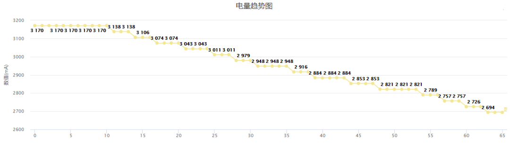

中通移动应用功耗测试最佳实践（一）
随着移动互联网在快递物流行业里的应用，越来越多中通用户在手机上完成快递包裹的下单与跟踪。以中通掌中通为例，日活用户数超35万，日均启动次数超900万，庞大的用户群体和高频使用场景对移动应用的性能提出了更高要求。如何更快更准更有效地监控APP性能数据、怎样通过指标为产品性能优化提供参考等都是中通科技质量团队不断探索的课题。
中通科技测试小伙伴将分三个篇幅来解读基于GT探索出的移动功耗自动化测试最佳实践。本文为第一篇，先带大家了解下中通移动功耗的测试流程、数据采集、监控指标和报告展示。
测试流程
Step 1 测试需求：根据待测应用和版本确定功耗测试计划，包含测试周期、测试范围、测试资源和测试环境。
Step2 GT引入：应用的数据采集通过GT来实现，主流的Android和iOS两类系统分别通过SDK和iOS Framework包的嵌入来实现。
Step3 分支构建：基于GT的二次开发代码在Jenkins上拉出测试分支，并将GT包合入分支并构建。
Step4 用例设计：根据测试需求设计测试场景和操作步骤，并明确结果数据采集所需的手机和应用。手工完成一轮测试执行，估算用例执行时长，以此来推算数据采集的时间范围。
Step5 参数配置：GT控制台的参数配置包括待测性能项、IP地址和数据存储。
Step6 报告分析：手机端性能数据采集，性能数据的展示与结果比对分析。
数据采集
移动功耗的数据采集从手机、应用和用例三个类别展开。“三因子两状态”的不同组合，让功耗测试的结果比对更加精准，为不同维度的测试数据分析提供参考。例如：中通掌中通V5.0在iOS10的iPhone8上执行快递收发派签操作，基于自定义的手机和应用配置，采集不同轮次的用例执行结果。
监控指标
移动应用的性能指标包括CPU消耗、内存消耗、启动时间、滑动速度、界面切换速度、流量耗用、电量耗用等。中通测试小伙伴结合待测应用的具体使用场景，确定了4个监控分析指标：CPU占用、内存占用、电量消耗与流量消耗。
CPU占用：体现了应用进程的繁忙程度
内存占用：体现了当前进程内存的使用情况，内存占用过高可能会引起内存抖动，或OutOfMemory异常
流量消耗：表示当前进程网络的使用情况

电量消耗：表示当前进程电量的使用情况
报告分析
应用性能指标的数据采集在报告中的展示是静态的。中通科技测试小伙伴通过设定几组计算规则将这些静态数据转化为性能优化的参考指，样例和计算规则参见如下：
基础版本选择： 目前是统计最近两个迭代的APP版本，将最早的版本作为基础版本，在完成多个版本测试之后，建议将性能最优的作为参考基础版。
CPU均值对比=基础版本平均值-高版本平均值。若值为正，则高版本的CPU均值消耗较低，若值为负，则高版本CPU均值消耗较高。
内存均值对比=基础版本平均值-高版本平均值。若值为正，则高版本的内存均值消耗较低，若值为负，则高版本内存均值消耗较高。
流量对比=基础版本值-高版本值。若值为正，则高版本的流量消耗较低，若值为负，则高版本流量消耗较高。
耗电对比=（高版本满电量-高版本剩余电量）-（基础版本满电量-基础版本剩余电量）。若值为正，则高版本为更省电。若值为负，则高版本更消耗电。
未完待续
感谢中通科技测试小伙伴为应用功耗测试所付出的努力，小伙伴们也希望收到各位读者的意见与建议。后续连载的篇幅将带着大家详细了解中通科技测试小伙伴是怎样基于GT的二次开发实现移动应用功耗自动化测试的，敬请期待。